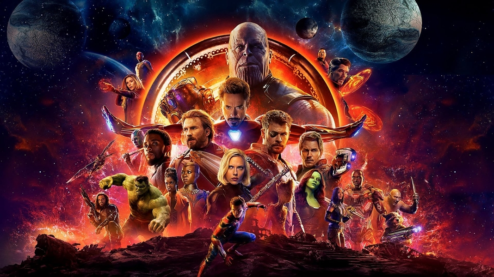

Sinopse
Após Thanos eliminar metade da vida no universo, os heróis sobreviventes sofrem com o luto e a derrota. Cinco anos depois, uma chance inesperada surge com o retorno de Scott Lang (o Homem-Formiga) do Reino Quântico, trazendo uma teoria que pode mudar tudo: a possibilidade de viajar no tempo.
Informaçoẽs
Gênero: Ação
Lançamento: 2019
Avaliação: 10/10
Elenco principal
• Robert Downey Jr. como Tony Stark / Homem de Ferro
• Chris Evans como Steve Rogers / Capitão América
• Chris Hemsworth como Thor
• Mark Ruffalo como Bruce Banner / Hulk
• Scarlett Johansson como Natasha Romanoff / Viúva Negra
• Jeremy Renner como Clint Barton / Gavião Arqueiro (Ronin)
Sobre o filme
É o épico encerramento de uma saga de 22 filmes da Marvel, focado na superação do luto e na última tentativa dos heróis de salvar o universo.
Assista o Trailler:
Assista o trailler do melhor filme lançado pela Marvel: 👇